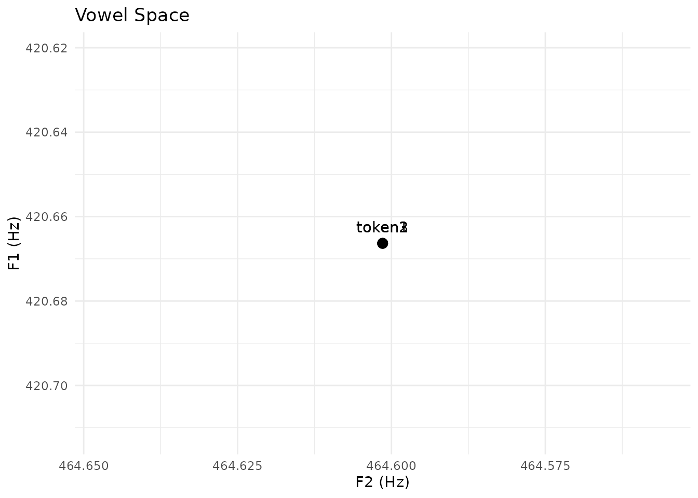
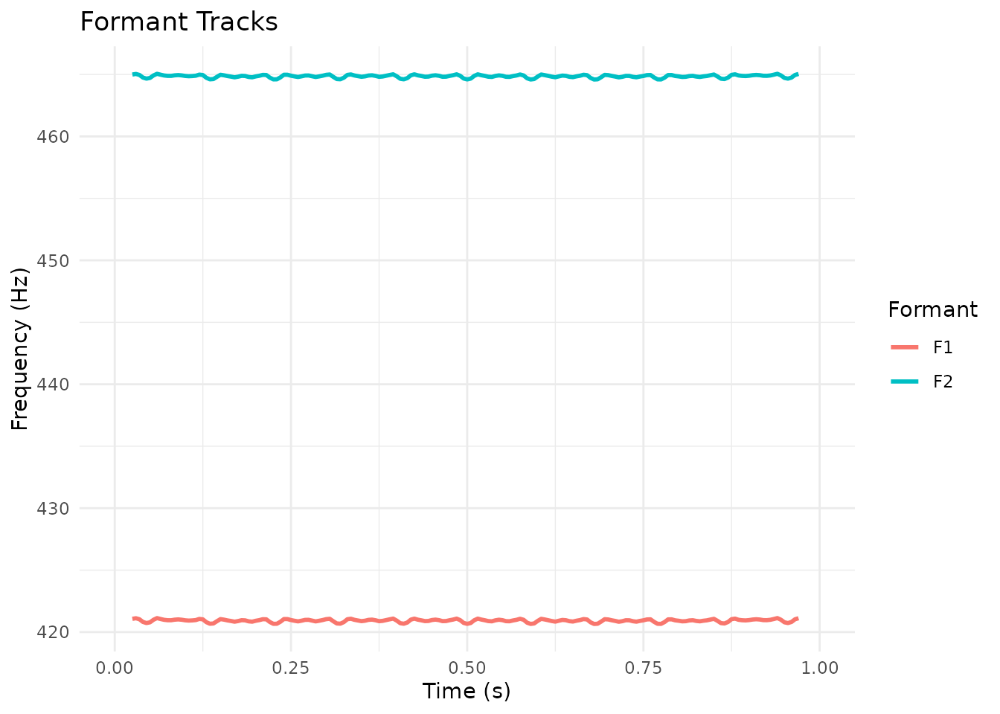

Introduction
pladdrr provides multiple methods for formant extraction. This vignette covers when to use each method, how to troubleshoot formant detection issues, and parameter tuning for formant analysis.
Formant Extraction Methods
Available Methods
-
Burg (
to_formant_burg) - LPC-based, recommended for general use -
Keep All (
to_formant_keepall) - Retains all LPC formants without filtering -
Robust (
to_formant_robust) - Outlier-resistant iterative refit of Burg -
Willems (
to_formant_willems) - Alternative LPC formant tracker -
Split-Levinson (
to_formant_sl) - LPC via split-Levinson recursion -
From Excitation
(
excitation$to_formant) - Perceptual-based extraction, viaSpectrum$to_excitation()orCochleagram$to_excitation()
1. Burg’s Method (Standard)
The most commonly used method, based on the Burg algorithm for LPC analysis:
# Create a synthesized vowel sound (pure tones don't have formants)
# KlattGrid synthesizes speech with formant structure
# Use a longer duration (1s) for stable analysis
kg <- tryCatch({
klattgrid_create_from_vowel(
duration = 1.0, # Longer duration for stable analysis
f0start = 120, # Fundamental frequency
f1 = 730, b1 = 90, # F1 for /a/ vowel
f2 = 1090, b2 = 110, # F2
f3 = 2440, b3 = 170 # F3
)
}, error = function(e) {
message("KlattGrid synthesis failed: ", e$message)
NULL
})
if (!is.null(kg)) {
sound <- kg$to_sound()
# Standard Burg formant extraction with error handling
formant_burg <- tryCatch({
sound$to_formant_burg(
time_step = 0.005, # 5 ms steps
max_formants = 5, # Track up to F5
max_frequency = 5500, # Ceiling (Hz)
window_length = 0.025, # 25 ms analysis window
pre_emphasis_from = 50 # Pre-emphasis from 50 Hz
)
}, error = function(e) {
message("Formant extraction failed: ", e$message)
message("Note: This requires completed polynomial root finding implementation")
NULL
})
# Query formants at midpoint if extraction succeeded
if (!is.null(formant_burg)) {
f1 <- formant_burg$get_value_at_time(1, 0.5, unit = "hertz")
f2 <- formant_burg$get_value_at_time(2, 0.5, unit = "hertz")
if (!is.na(f1) && !is.na(f2)) {
print(paste("F1:", round(f1), "Hz (expected ~730)"))
print(paste("F2:", round(f2), "Hz (expected ~1090)"))
}
} else {
message("Skipping formant queries - extraction not available")
}
} else {
message("Skipping formant analysis - synthesis not available")
}
#> [1] "F1: 732 Hz (expected ~730)"
#> [1] "F2: 1095 Hz (expected ~1090)"When to Use Burg
Use Burg for: - Standard speech analysis (recommended default) - Fast processing - General vowel formant tracking - Batch processing of many files
Consider alternatives for: - Very noisy recordings (try Excitation-based method) - Exploratory research (consider Keep All to see all detected formants)
2. Keep All Method
Retains all detected LPC formants without filtering:
formant_keepall <- sound$to_formant_keepall(
time_step = 0.005,
max_formants = 5, # Maximum formants to track
max_frequency = 5500,
window_length = 0.025,
pre_emphasis_from = 50
)
formant_keepall
#> <Praat Formant object>
#> Number of frames: 190
#> Time step: 0.005000 s
#> Min formants: 5
#> Max formants: 5When to Use Keep All
Use Keep All for: - Exploratory analysis - Research applications - Comparison with the Burg method
Avoid Keep All for: - Cases where you need only specific formants filtered out
Keep All vs. Burg Example
# Same sound, both methods
formant_b <- sound$to_formant_burg(max_formants = 4)
formant_k <- sound$to_formant_keepall(max_formants = 4)
# Extract F1 and F2
time <- 0.25
f1_burg <- formant_b$get_value_at_time(1, time, unit = "hertz")
f1_keep <- formant_k$get_value_at_time(1, time, unit = "hertz")
f2_burg <- formant_b$get_value_at_time(2, time, unit = "hertz")
f2_keep <- formant_k$get_value_at_time(2, time, unit = "hertz")
# Comparison
if (!anyNA(c(f1_burg, f1_keep, f2_burg, f2_keep))) {
cat("Method Comparison:\n")
cat(sprintf(" Burg: F1 = %d Hz, F2 = %d Hz\n", round(f1_burg), round(f2_burg)))
cat(sprintf(" Keep All: F1 = %d Hz, F2 = %d Hz\n", round(f1_keep), round(f2_keep)))
cat(sprintf(" Diff: F1 = %d Hz, F2 = %d Hz\n",
round(abs(f1_burg - f1_keep)),
round(abs(f2_burg - f2_keep))))
}
#> Method Comparison:
#> Burg: F1 = 874 Hz, F2 = 1286 Hz
#> Keep All: F1 = 874 Hz, F2 = 1286 Hz
#> Diff: F1 = 0 Hz, F2 = 0 Hz3. Alternative Methods (Advanced)
to_formant_willems() and to_formant_sl()
(split-Levinson) provide alternative LPC-based extraction.
to_formant_robust() iteratively refits Burg while
down-weighting outlier frames (num_std_dev,
max_iterations). Burg (recommended) or Keep All cover most
use cases; these are for comparison or specific research needs.
formant_robust <- sound$to_formant_robust(
time_step = 0.005,
max_formants = 5,
max_frequency = 5500,
window_length = 0.025,
pre_emphasis_from = 50,
num_std_dev = 1.5, # outlier threshold in standard deviations
max_iterations = 5
)
formant_robust
#> <Praat Formant object>
#> Number of frames: 190
#> Time step: 0.005000 s
#> Min formants: 5
#> Max formants: 5Choosing Formant Ceiling
The maximum formant frequency affects which formants are tracked:
Speaker-Specific Ceilings
# Speaker-specific formant ceilings demonstration
# Only run if sound was created successfully
if (exists("sound") && !is.null(sound)) {
# Adult male
formant_male <- tryCatch(
sound$to_formant_burg(max_frequency = 5000),
error = function(e) {
message("Male ceiling failed: ", e$message)
NULL
}
)
# Adult female
formant_female <- tryCatch(
sound$to_formant_burg(max_frequency = 5500),
error = function(e) {
message("Female ceiling failed: ", e$message)
NULL
}
)
# Child
formant_child <- tryCatch(
sound$to_formant_burg(max_frequency = 8000),
error = function(e) {
message("Child ceiling failed: ", e$message)
NULL
}
)
# Report results
cat("Formant extraction results:\n")
cat(" Male (5000 Hz):", if (!is.null(formant_male)) "OK" else "failed", "\n")
cat(" Female (5500 Hz):", if (!is.null(formant_female)) "OK" else "failed", "\n")
cat(" Child (8000 Hz):", if (!is.null(formant_child)) "OK" else "failed", "\n")
} else {
message("Skipping ceiling demo - sound not available")
}
#> Formant extraction results:
#> Male (5000 Hz): OK
#> Female (5500 Hz): OK
#> Child (8000 Hz): OKParameter Tuning
Window Length
if (exists("sound") && !is.null(sound)) {
# Short window (better time resolution)
formant_short <- tryCatch(
sound$to_formant_burg(window_length = 0.010),
error = function(e) {
message("10ms window failed")
NULL
}
)
# Standard window (balanced)
formant_std <- tryCatch(
sound$to_formant_burg(window_length = 0.025),
error = function(e) {
message("25ms window failed")
NULL
}
)
# Long window (better frequency resolution)
formant_long <- tryCatch(
sound$to_formant_burg(window_length = 0.050),
error = function(e) {
message("50ms window failed")
NULL
}
)
} else {
message("Skipping window-length demo - sound not available")
}Recommendations: - Vowels (sustained): 0.025-0.050 s - Consonants (rapid): 0.010-0.020 s - General speech: 0.025 s (default) - Singing: 0.050-0.100 s
Time Step
if (exists("sound") && !is.null(sound)) {
# Coarse (fast, less detail)
formant_coarse <- tryCatch(
sound$to_formant_burg(time_step = 0.010),
error = function(e) {
message("10ms step failed")
NULL
}
)
# Standard (good balance)
formant_std <- tryCatch(
sound$to_formant_burg(time_step = 0.005),
error = function(e) {
message("5ms step failed")
NULL
}
)
# Fine (slow, more detail)
formant_fine <- tryCatch(
sound$to_formant_burg(time_step = 0.002),
error = function(e) {
message("2ms step failed")
NULL
}
)
} else {
message("Skipping time-step demo - sound not available")
}Recommendations: - Static vowels: 0.010 s - Conversational speech: 0.005 s - Rapid transitions: 0.002 s
Number of Formants
if (exists("sound") && !is.null(sound)) {
# Track only F1-F2 (faster)
# Note: Low max_formants can fail on some sounds due to polynomial constraints
formant_2 <- tryCatch(
sound$to_formant_burg(max_formants = 2),
error = function(e) {
tryCatch(
sound$to_formant_burg(max_formants = 4),
error = function(e2) {
message("F2 tracking failed")
NULL
}
)
}
)
# Standard (F1-F5) - most reliable
formant_5 <- tryCatch(
sound$to_formant_burg(max_formants = 5),
error = function(e) {
message("F5 tracking failed")
NULL
}
)
# Extended (up to F7, slower)
formant_7 <- tryCatch(
sound$to_formant_burg(max_formants = 7, max_frequency = 7000),
error = function(e) {
tryCatch(
sound$to_formant_burg(max_formants = 5, max_frequency = 5500),
error = function(e2) {
message("F7 tracking failed")
NULL
}
)
}
)
} else {
message("Skipping num-formants demo - sound not available")
}Troubleshooting Formant Detection
Problem: No Formants Detected
formant <- sound$to_formant_burg()
f1 <- formant$get_value_at_time(1, 0.1, unit = "hertz")
# Returns: NASolutions:
- Lower the ceiling:
# Try lower maximum frequency
formant <- sound$to_formant_burg(max_frequency = 4500)- Increase window length:
formant <- sound$to_formant_burg(window_length = 0.050)- Check if sound is silent:
intensity <- sound$to_intensity()
mean_intensity <- intensity$get_mean(0, 0) # in dB
# If < 30 dB, may be too quietProblem: Formants Jump Erratically
# F1 jumps from 500 Hz to 2000 Hz between framesSolutions:
- Use robust tracking:
formant <- sound$to_formant_robust(
num_std_dev = 1.5, # outlier threshold in standard deviations
max_iterations = 5 # refit iterations
)- Increase window length:
formant <- sound$to_formant_burg(window_length = 0.040)- Reduce time step:
formant <- sound$to_formant_burg(time_step = 0.002)Problem: F3 Detected as F2
# F2 shows values ~3000 Hz (likely F3)Solutions:
- Adjust formant ceiling:
# Lower ceiling may force re-evaluation
formant <- sound$to_formant_burg(max_frequency = 4800)- Try Keep All method for comparison:
formant <- sound$to_formant_keepall(max_formants = 5)- Check bandwidth:
bandwidth <- formant$get_bandwidth_at_time(2, 0.1, unit = "hertz")
# Very wide bandwidth may indicate spurious formantVowel Space Analysis
Extracting F1-F2 for Vowel Plot
# Analyze multiple vowel tokens. In practice, pass paths to your own
# recordings of each vowel; the test file is reused here for illustration.
wav_path <- system.file("extdata", "test.wav", package = "pladdrr")
vowels <- rep(wav_path, 3)
vowel_labels <- c("token1", "token2", "token3")
vowel_data <- data.frame()
for (i in seq_along(vowels)) {
sound <- Sound$new(vowels[i])
formant <- sound$to_formant_burg()
# Extract at vowel midpoint
duration <- sound$get_total_duration()
midpoint <- duration / 2
f1 <- formant$get_value_at_time(1, midpoint, unit = "hertz")
f2 <- formant$get_value_at_time(2, midpoint, unit = "hertz")
vowel_data <- rbind(vowel_data, data.frame(
vowel = vowel_labels[i],
F1 = f1,
F2 = f2
))
}
# Plot vowel space
ggplot(vowel_data, aes(x = F2, y = F1, label = vowel)) +
geom_point(size = 3) +
geom_text(vjust = -1) +
scale_x_reverse() + # F2 decreases left to right
scale_y_reverse() + # F1 decreases bottom to top
labs(title = "Vowel Space",
x = "F2 (Hz)", y = "F1 (Hz)") +
theme_minimal()
Formant Tracking Over Time
sound <- Sound$new(wav_path)
formant <- sound$to_formant_burg(time_step = 0.005)
# Extract F1 and F2 across time
times <- seq(0, sound$get_total_duration(), by = 0.005)
f1_values <- vapply(times, function(t) {
formant$get_value_at_time(1, t, unit = "hertz")
}, numeric(1))
f2_values <- vapply(times, function(t) {
formant$get_value_at_time(2, t, unit = "hertz")
}, numeric(1))
# Plot formant tracks
df <- data.frame(
Time = rep(times, 2),
Frequency = c(f1_values, f2_values),
Formant = rep(c("F1", "F2"), each = length(times))
)
ggplot(df, aes(x = Time, y = Frequency, color = Formant)) +
geom_line(linewidth = 1) +
labs(title = "Formant Tracks",
x = "Time (s)", y = "Frequency (Hz)") +
theme_minimal()
#> Warning: Removed 22 rows containing missing values or values outside the scale range
#> (`geom_line()`).
Advanced: Formant from Excitation
For noisy or breathy speech, excitation-based formant extraction is an alternative:
# For noisy recordings, use excitation-based formant extraction
sound <- Sound$new(wav_path)
# Method 1: Via Spectrum
spectrum <- sound$to_spectrum()
excitation <- spectrum$to_excitation()
formant_exc <- excitation$to_formant(max_formants = 5)
# Method 2: Via Cochleagram (more complex but robust)
cochlea <- sound$to_cochleagram()
excitation2 <- cochlea$to_excitation(0.15) # At specific time
formant_exc2 <- excitation2$to_formant(max_formants = 5)When to use: - Breathy voice - Noisy recordings - Pathological voice - Whispered speech
Best Practices Summary
General Recommendations
- Start with Burg - Recommended default for most cases
- Compare with Keep All - If results look suspicious
- Adjust ceiling - Based on speaker demographics
- Use appropriate time step - Balance speed vs. detail
- Check intensity - Low intensity → unreliable formants
- Try Excitation method - For very noisy recordings
Quality Checks
time <- 0.2 # the time point being checked, in seconds
# 1. Check if formants are in expected ranges
f1 <- formant$get_value_at_time(1, time, unit = "hertz")
f2 <- formant$get_value_at_time(2, time, unit = "hertz")
if (!is.na(f1) && !is.na(f2)) {
# F1 should be < F2
if (f1 >= f2) warning("F1 >= F2, likely error")
# Formants should be in typical ranges
if (f1 < 200 || f1 > 1200) warning("F1 out of typical range")
if (f2 < 700 || f2 > 3500) warning("F2 out of typical range")
}
#> Warning: F2 out of typical range
# 2. Check bandwidth (shouldn't be too large)
b1 <- formant$get_bandwidth_at_time(1, time, unit = "hertz")
if (!is.na(b1) && b1 > 400) warning("Large F1 bandwidth")
# 3. Check formant continuity
f1_prev <- formant$get_value_at_time(1, time - 0.010, unit = "hertz")
if (!is.na(f1) && !is.na(f1_prev)) {
jump <- abs(f1 - f1_prev)
if (jump > 300) warning("Large formant jump (>300 Hz)")
}Session Info
sessionInfo()
#> R version 4.6.1 (2026-06-24)
#> Platform: x86_64-pc-linux-gnu
#> Running under: Ubuntu 24.04.4 LTS
#>
#> Matrix products: default
#> BLAS: /usr/lib/x86_64-linux-gnu/openblas-pthread/libblas.so.3
#> LAPACK: /usr/lib/x86_64-linux-gnu/openblas-pthread/libopenblasp-r0.3.26.so; LAPACK version 3.12.0
#>
#> locale:
#> [1] LC_CTYPE=C.UTF-8 LC_NUMERIC=C LC_TIME=C.UTF-8
#> [4] LC_COLLATE=C.UTF-8 LC_MONETARY=C.UTF-8 LC_MESSAGES=C.UTF-8
#> [7] LC_PAPER=C.UTF-8 LC_NAME=C LC_ADDRESS=C
#> [10] LC_TELEPHONE=C LC_MEASUREMENT=C.UTF-8 LC_IDENTIFICATION=C
#>
#> time zone: UTC
#> tzcode source: system (glibc)
#>
#> attached base packages:
#> [1] stats graphics grDevices utils datasets methods base
#>
#> other attached packages:
#> [1] ggplot2_4.0.3 pladdrr_5.0.5
#>
#> loaded via a namespace (and not attached):
#> [1] gtable_0.3.6 jsonlite_2.0.0 dplyr_1.2.1
#> [4] compiler_4.6.1 tidyselect_1.2.1 Rcpp_1.1.2
#> [7] jquerylib_0.1.4 systemfonts_1.3.2 scales_1.4.0
#> [10] textshaping_1.0.5 yaml_2.3.12 fastmap_1.2.0
#> [13] R6_2.6.1 labeling_0.4.3 generics_0.1.4
#> [16] knitr_1.51 tibble_3.3.1 desc_1.4.3
#> [19] bslib_0.12.0 pillar_1.11.1 RColorBrewer_1.1-3
#> [22] rlang_1.3.0 cachem_1.1.0 xfun_0.60
#> [25] fs_2.1.0 sass_0.4.10 S7_0.2.2
#> [28] otel_0.2.0 cli_3.6.6 pkgdown_2.2.1
#> [31] withr_3.0.3 magrittr_2.0.5 digest_0.6.39
#> [34] grid_4.6.1 lifecycle_1.0.5 vctrs_0.7.3
#> [37] evaluate_1.0.5 glue_1.8.1 data.table_1.18.6.1
#> [40] farver_2.1.2 codetools_0.2-20 ragg_1.5.2
#> [43] rmarkdown_2.31 tools_4.6.1 pkgconfig_2.0.3
#> [46] htmltools_0.5.9